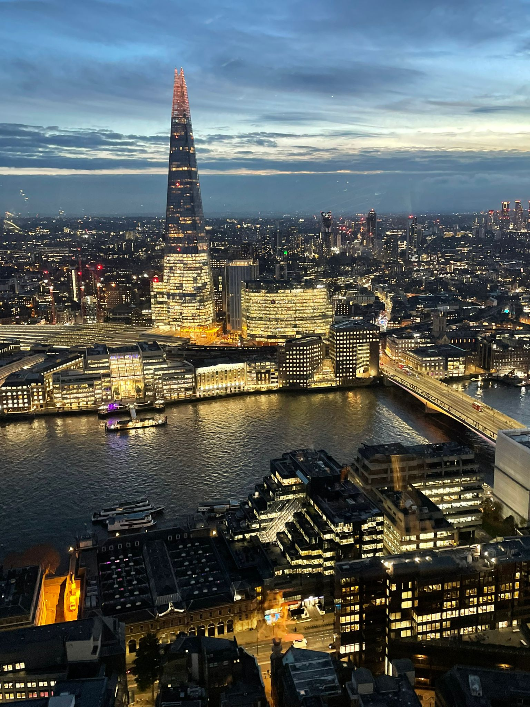
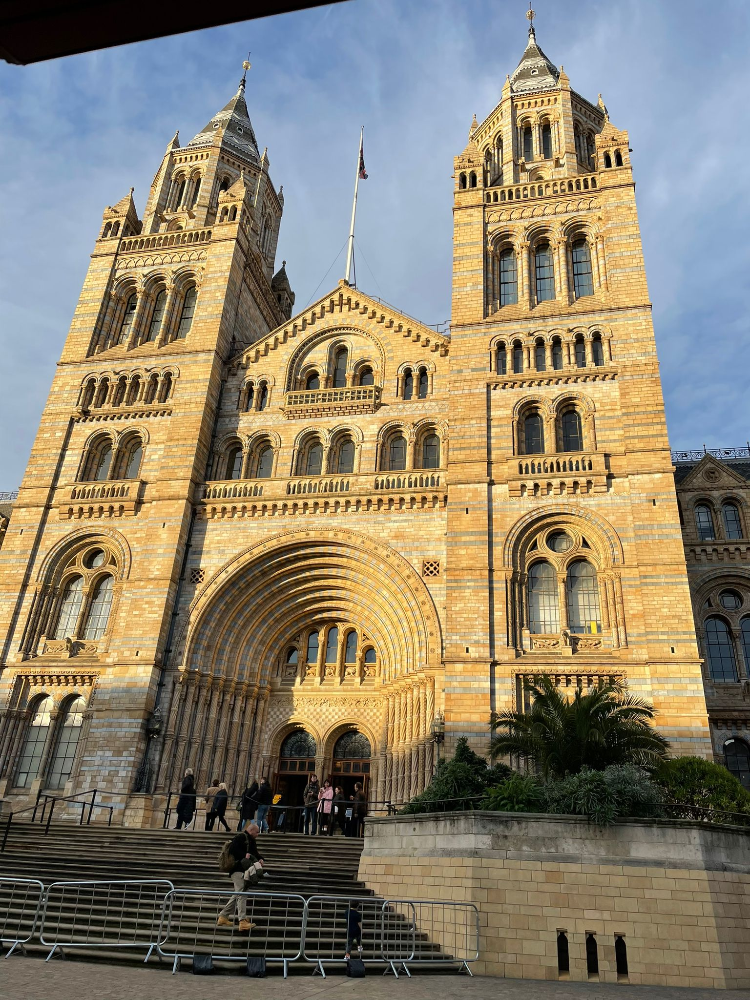
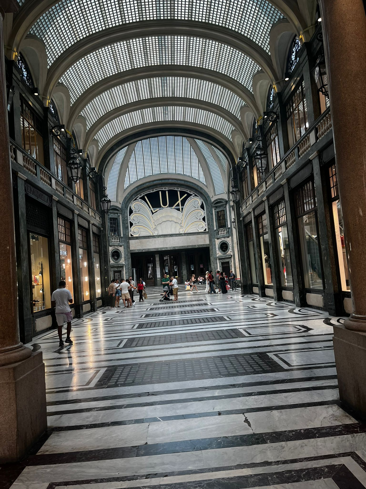
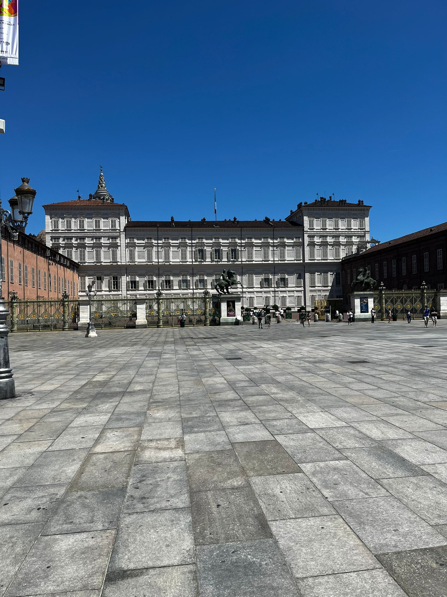
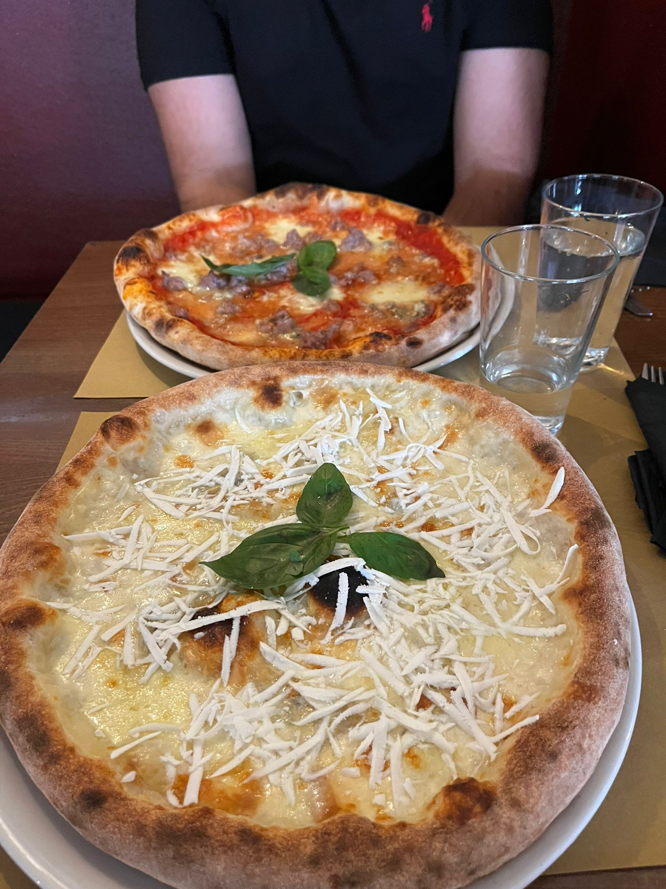
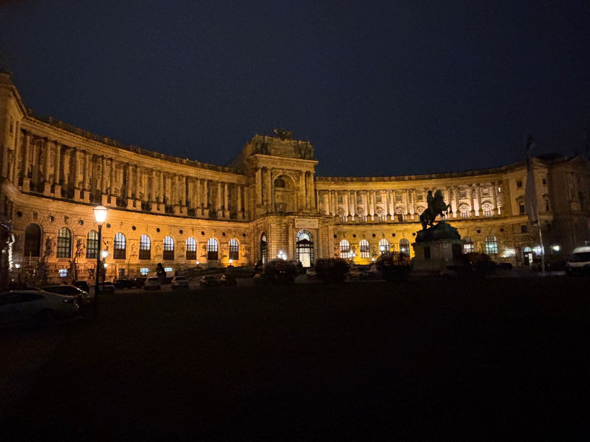
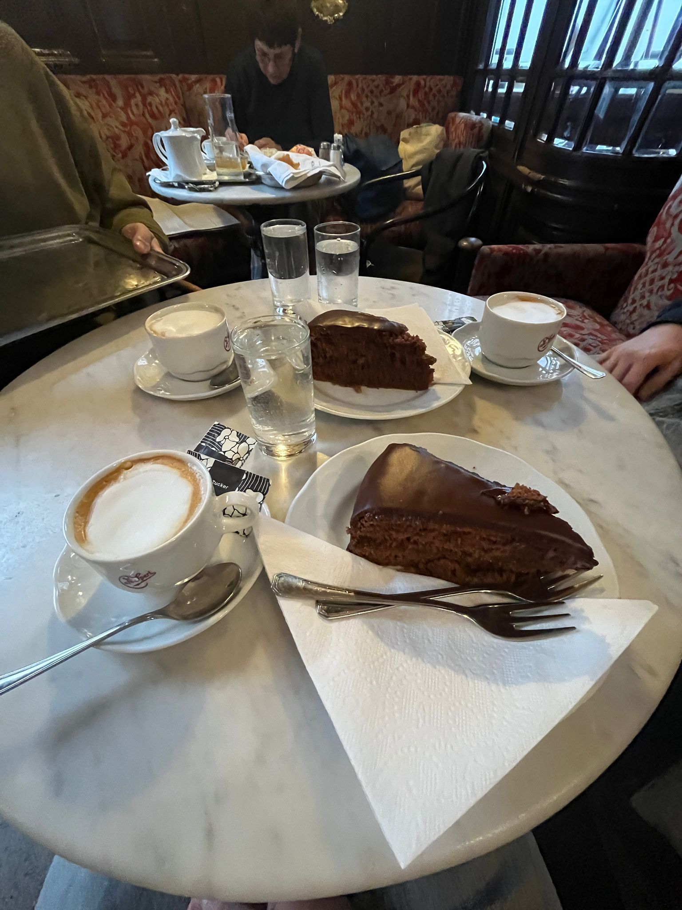
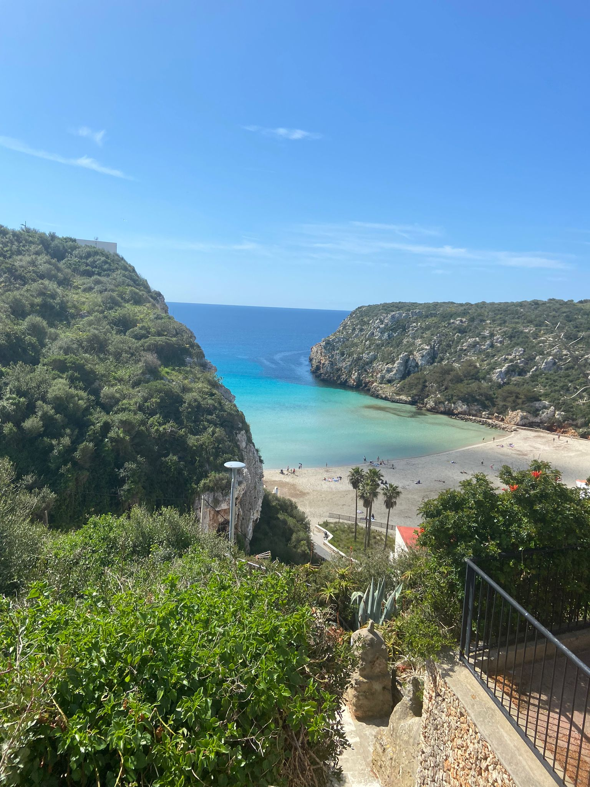
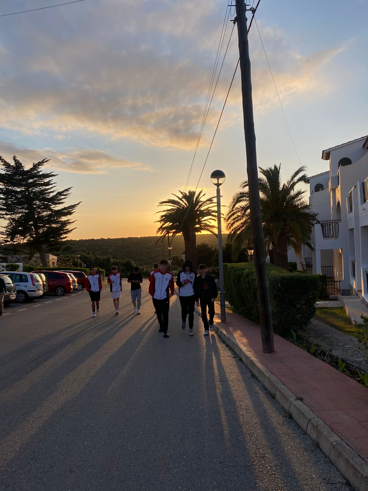

¿Quién hay detrás?
Me llamo Martí, tengo 19 años y soy de Badalona. ViajasBarato.es nació porque me encanta viajar, pero la realidad es que con 19 años el presupuesto no da para todo lo que uno quisiera.
Así que empecé a obsesionarme con encontrar la forma de viajar más gastando menos. Modo incógnito, volar en martes, alertas de precio en Skyscanner… fui probando todo hasta que empezó a funcionar. Y pensé: ¿por qué no compartirlo?
Esta web es eso — un lugar donde cuento todo lo que voy aprendiendo para que tú también puedas viajar sin que tu cuenta bancaria sufra demasiado.
"Mi primer viaje sin adultos fue a Turín. Yo mismo busqué los vuelos en Skyscanner, en modo incógnito, volando un miércoles. 42€ ida y vuelta desde Barcelona. Desde entonces no viajo de otra manera."
Los destinos que he pisado
No voy a fingir que soy un viajero veterano con 50 países a la espalda. Tengo 19 años y estoy empezando. Pero cada viaje me ha enseñado algo:
Y soñando a lo grande: EEUU para ver un partido de NBA en directo y los Carnavales de Brasil con mis amigos. Algún día. Mientras tanto, quizás Portugal u Holanda sean los próximos.
Una noche en Londres que no olvidaré
Estábamos en el hotel con todos mis amigos del instituto cuando de repente alguien puso el partido del Manchester United. Y en directo, ante nuestros ojos, Alejandro Garnacho marcó una chilena impresionante contra el Everton. Era el 26 de noviembre de 2023.
Nos pusimos a celebrarlo como locos con gente del hotel que ni conocíamos. Eso es lo que tiene viajar — que los momentos más inesperados acaban siendo los que más recuerdas.
¿Por qué ViajasBarato.es?
Porque creo que viajar no debería ser un privilegio de quien tiene mucho dinero. Con los trucos adecuados, cualquiera puede permitirse conocer el mundo — o al menos una buena parte de él.
Esta web no es perfecta ni pretende serlo. Es un proyecto en construcción, igual que yo. Voy aprendiendo a medida que viajo y a medida que investigo, y todo lo que aprendo lo comparto aquí.
Si algún consejo te sirve para ahorrar en tu próximo viaje, ya habrá valido la pena.
Mis fotos de viaje
Estas son fotos reales de mis viajes. Sin filtros de stock, sin imágenes de internet. Lo que ves es lo que encontrarás.
📷 Todas las fotos son mías, sacadas durante mis viajes.
Londres, Reino Unido 🏴



Turín, Italia



Viena, Austria



Menorca, España


¿Listo para viajar más barato?
Descubre todos los trucos, destinos y herramientas que uso para pagar menos en cada viaje.
Ver la guía completa ✈️